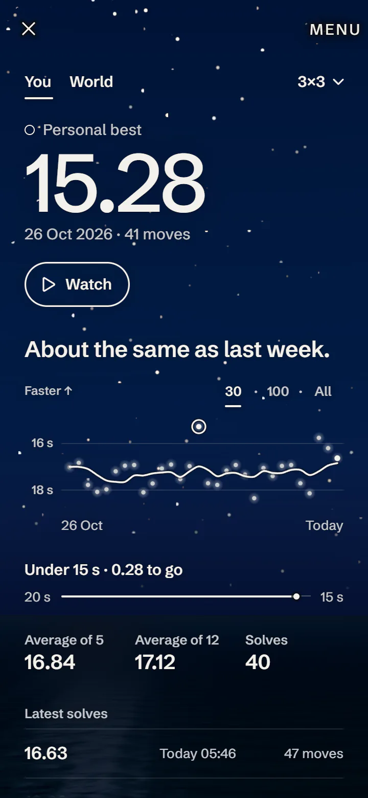
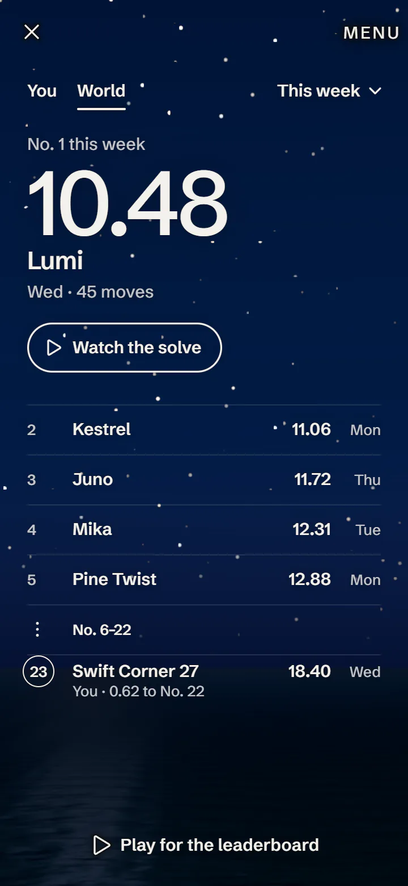

Scan your cube. Solve it on the screen.
A 3D cube on your phone, with a timer and duels. Free, with no account and no ads.
This is your cube
Hold up your mixed-up 3×3, and the camera reads the colors. Then play that same cube on the screen, and Help shows the next move until it is solved.
No photos are saved or sent.
From 2×2 to 7×7
Drag to turn the cube. Tap Scramble, and the clock starts with your first turn.

See your progress
Your best time sits at the top, and Watch plays that solve again, move by move. A graph shows how you are doing, with your next goal and your averages below.

Join the leaderboard
Post a ranked 3×3 time if you want to. See the top 100 this week and of all time, watch the fastest solves, and see how many you are faster than. Every posted solve is replayed and checked.
You win by 0.77 s.
Send a friend the same cube as a link. They play it on their phone, or copy it on their own cube, and you compare times.
Choose your view
Above the clouds, above the sea, or above the Earth.
Free, and yours
No account. No ads. Your times stay on your phone. If you join the leaderboard, your name, the solves you post and any reports you make are sent.